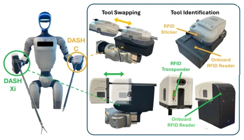
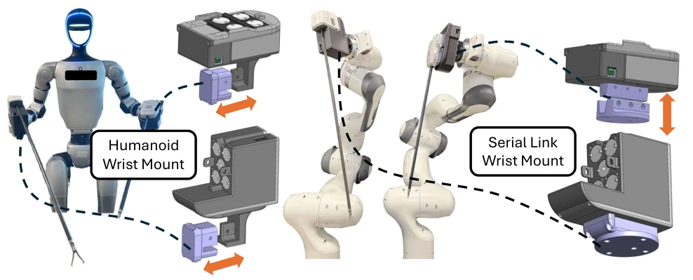
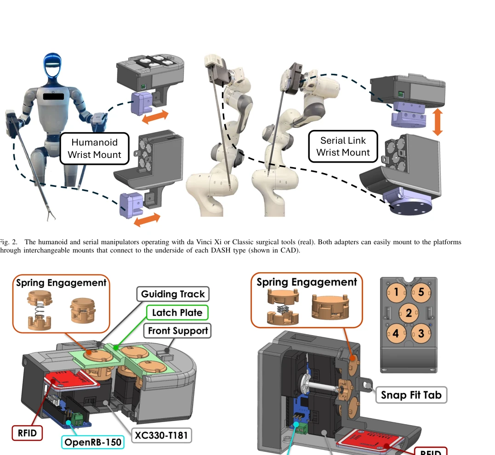
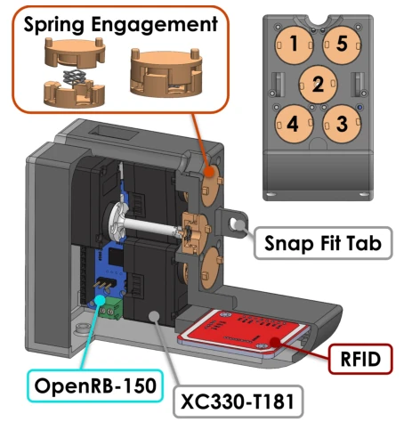
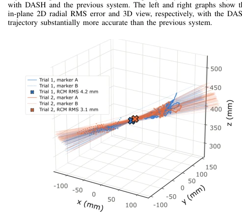
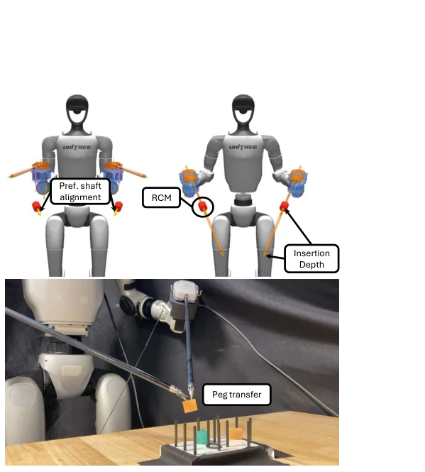
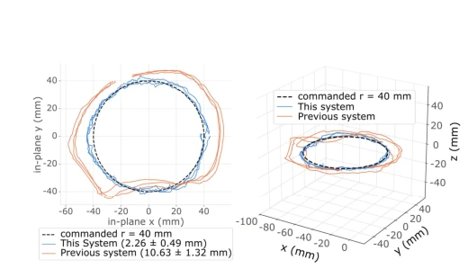

This paper developed a universal adapter for Da Vinci surgical instruments, attempting to liberate them from expensive proprietary systems and integrate them into humanoid or serial robots. This approach is indeed clever, directly lowering the research barrier, allowing ordinary laboratories to utilize high-end surgical instruments. However, do not be too optimistic; essentially, this is still a research toy. The authors themselves admit it has not undergone real surgery, sterilization, and verification by real doctors, and is far from clinical implementation. Previous solutions either could only hold handheld tools [8], or like MOPS [12], could not automatically identify tools. Although DASH solves wireless identification and native drive issues, the complexity of the mechanical structure and the room for latency optimization remain limited. Overall, this is a good hardware innovation, but do not expect it to enter the operating room tomorrow; currently, it more proves that general robots can also handle scalpels, solving the problem of high infrastructure barriers [1][2].
研究动机Motivation
微创手术虽好，但专用手术机器人如达芬奇系统成本高昂且占用大量手术室空间 [1][2]，限制了资源匮乏地区的普及。现有通用机器人尝试手术时，多依赖手持器械配合被动连杆，缺乏原生驱动能力 [8]。虽然有人形机器人介入，但工具切换和识别不够智能。现有适配器如 MOPS [12] 虽支持换工具，但无法无线识别工具 ID 或自动适配运动学，导致操作不流畅且依赖人工配置。本研究旨在通过 DASH 适配器，让通用机器人能原生驱动达芬奇器械，降低科研门槛，同时利用人形机器人的灵活性适应现有手术室布局，减少对专用手术室的依赖，推动手术机器人研究的民主化。
Although minimally invasive surgery is beneficial, dedicated surgical robots such as Da Vinci systems have high costs and occupy significant operating room space [1][2], limiting their adoption in resource-poor areas. When existing general robots attempt surgery, they mostly rely on handheld instruments combined with passive linkages, lacking native drive capabilities [8]. Although humanoid robots are involved, tool switching and identification are not intelligent enough. Existing adapters like MOPS [12] support tool changing but cannot wirelessly identify tool IDs or automatically adapt kinematics, resulting in non-smooth operation and reliance on manual configuration. This study aims to use the DASH adapter to allow general robots to native drive Da Vinci instruments, lowering research barriers, while utilizing the flexibility of humanoid robots to adapt to existing operating room layouts, reducing dependency on dedicated operating rooms, and promoting the democratization of surgical robot research.

Fig. 1. The da Vinci Adapter for Serial-link and Humanoid platforms (DASH) adapts da Vinci surgical instruments onto compact, versatile plat- forms such as a humanoid robot. By decoupling these instruments from the da Vinci system, DASH provides a platform that can substantially reduce the infrastructure barrier to highly precise robotic minimally invasive surgery.
方法Method
整体流程为：工具插入 -> RFID 识别 -> 加载运动学 -> 遥控操作。 1. 机械结构：设计 DASH C 和 DASH Xi 两种适配器，利用弹簧和卡扣锁定达芬奇器械，不修改器械本身。适配器重量<0.5kg，兼容多种负载。 2. 电子与控制：内置 DYNAMIXEL 电机和 RFID 读取器。插入工具后，系统通过 RFID 读取 ID，自动加载对应的耦合矩阵（Coupling Matrix）和运动学参数。 3. 软件状态机：分为搜索和桥接状态。插入后自动归零（Auto-zero），建立机械零点参考。 4. 运动学与控制：基于 MDH 参数计算正逆运动学，结合 RCM（Remote Center of Motion）约束，确保器械绕穿刺点旋转。通过 MTM（主手）发送指令，解算关节角度。 5. 耦合矩阵：针对 Xi 工具，通过实验测量了电机角度与末端运动的映射关系，解决了官方未公开参数的问题。 运动学部分，系统通过 URDF 计算机器人肩关节到腕部的变换，再结合适配器到器械轴心的刚性变换，最后用 MDH 描述腕部运动。逆解时，通过 RCM 约束方程将末端位姿映射为关节角度，利用冗余自由度优化姿态。耦合矩阵将电机盘角度映射到关节空间，确保控制精度。
The overall process is: Tool insertion -> RFID identification -> Load kinematics -> Teleoperation. 1. Mechanical Structure: Designed two adapters, DASH C and DASH Xi, using springs and buckles to lock Da Vinci instruments without modifying the instruments themselves. Adapter weight <0.5kg, compatible with multiple loads. 2. Electronics and Control: Built-in DYNAMIXEL motors and RFID readers. After inserting the tool, the system reads the ID via RFID and automatically loads the corresponding Coupling Matrix and kinematic parameters. 3. Software State Machine: Divided into Search and Bridge states. Automatically zeroed (Auto-zero) after insertion to establish a mechanical zero reference. 4. Kinematics and Control: Calculate forward and inverse kinematics based on MDH parameters, combined with RCM (Remote Center of Motion) constraints to ensure the instrument rotates around the puncture point. Commands sent via MTM (Master), solving joint angles. 5. Coupling Matrix: For Xi tools, the mapping relationship between motor angles and end-effector motion was measured through experiments, solving the problem of undisclosed official parameters. In the kinematics part, the system calculates the transform from the robot shoulder joint to the wrist via URDF, then combines the rigid transform from adapter to tool axis, finally using MDH to describe wrist motion. During inverse solving, the end-effector pose is mapped to joint angles via RCM constraint equations, utilizing redundant degrees of freedom to optimize posture. The coupling matrix maps motor disk angles to joint space, ensuring control accuracy.

Fig. 2. The humanoid and serial manipulators operating with da Vinci Xi or Classic surgical tools (real). Both adapters can easily mount to the platforms through interchangeable mounts that connect to the underside of each DASH type (shown in CAD).

Fig. 3. Overview of the DASH C’s core features, including the guiding track, front support, spring engagement, RFID reader, motors, and controller. The DASH C is a compact and effective adapter that can connect with all the Classic tool instruments.

Fig. 4. Overview of DASH Xi’s core features, including the snap fit tab, spring engagement, RFID reader, motors, and controller. DASH Xi can connect to all Xi tool instruments. The front view in the top right shows the motor IDs.

Fig. 9. RCM convergence across two trials. Optitrack markers placed on either side of the RCM tracked the shaft’s motion over random trajectories which was used to determine the converged RCM and pivot error.
Experiments mainly verify adapter performance and system accuracy. 1. Adapter Verification: DASH C/Xi weights both meet standards (<0.5kg), motor latency <6ms, tool identification and zeroing success rate 100%. 2. Coupling Matrix: Measured errors of Xi tools, found roll axis error mainly from adapter backlash, pitch axis error from the tool itself. 3. System Comparison: Compared with previous humanoid robot laparoscopic system [8]. DASH end-to-end latency significantly reduced (20.3ms vs 156ms). Trajectory tracking accuracy improved; under 40mm radius ring command, DASH executed radius 41.45mm, old system 49.83mm. RCM convergence error within 10mm limit. 4. Findings: Although accuracy improved, lack of physical RCM constraint leads to slightly larger out-of-plane error, but overall responsiveness is better. Simulation part verified RCM control flow. In real tests, RCM convergence tracked via OptiTrack, confirming error within allowable range.
其他图片Other Figures

Fig. 7. Initialization of humanoid platform with DASH. The top left and right panels show the neutral and initialized poses, respectively. The RCM position, insertion depth, and instrument orientation are predefined to initialize the robot configuration before operation. The bottom panel displays the humanoid being teleoperated to complete a peg transfer task.

Fig. 8. Comparison of commanded tool tip trajectory vs executed trajectory with DASH and the previous system. The left and right graphs show the in-plane 2D radial RMS error and 3D view, respectively, with the DASH trajectory substantially more accurate than the previous system.